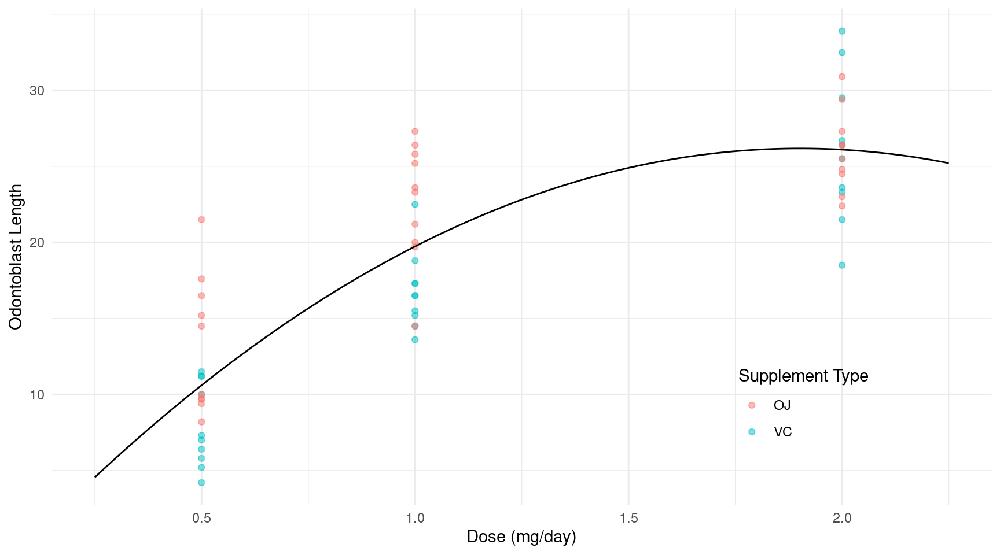
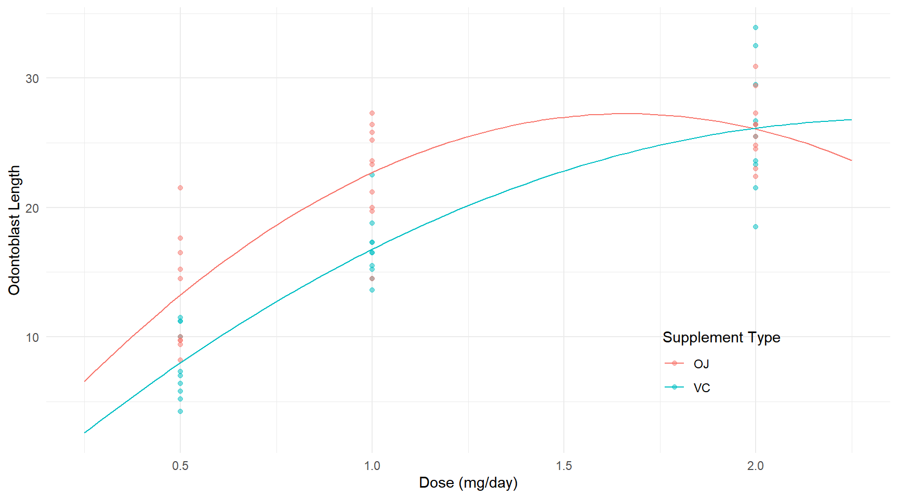
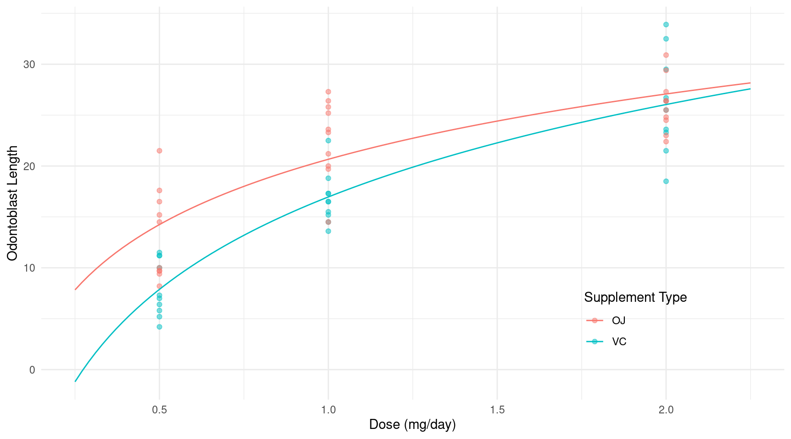
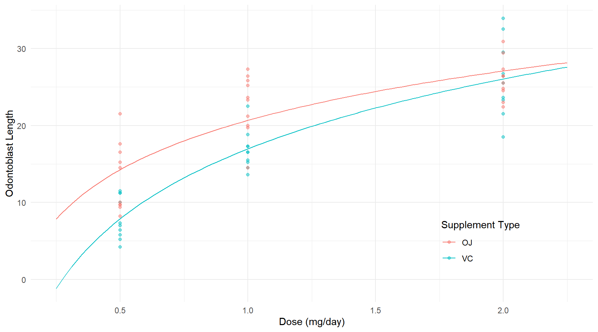
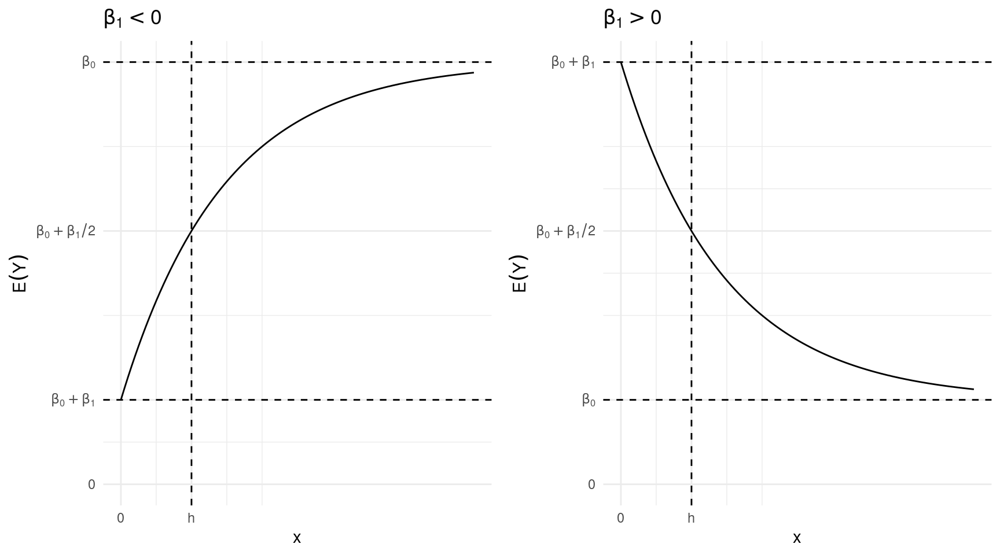
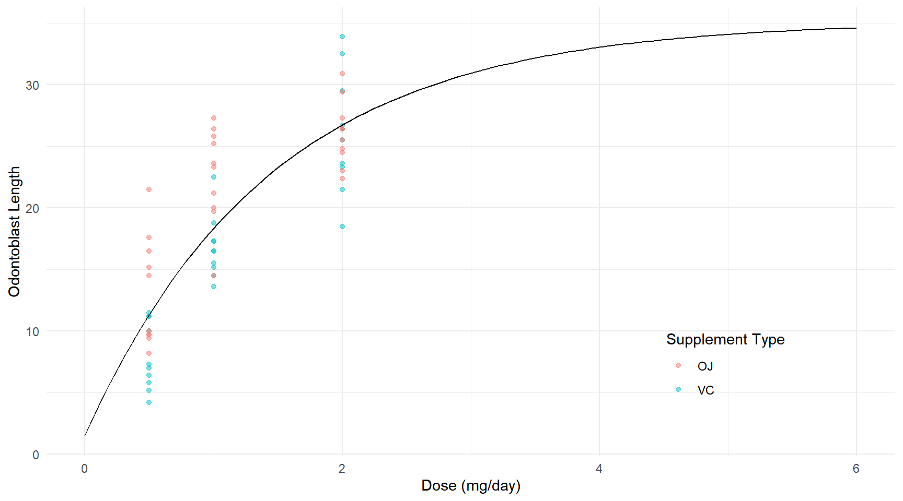
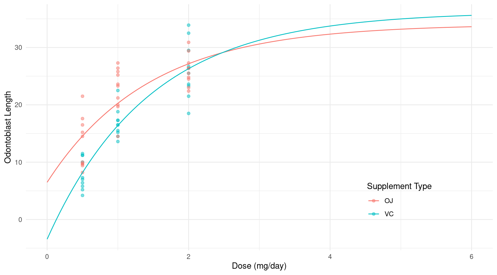

You can also download a PDF copy of this lecture.
Four approaches to modeling a nonlinear relationship between the expected response and a quantitative explanatory variable.
polynomials
transformations
splines
nonlinear regression
The first three can be done with linear models.
If we have a single explanatory variable \(x_i\), then a polynomial regression model of degree \(k\) is \[ E(Y_i) = \beta_0 + \beta_1 x_i + \beta_2 x_i^2 + \cdots + \beta_k x_i^k. \] Note that this is a linear model since we can write it as \[ E(Y_i) = \beta_0 + \beta_1 x_{i1} + \beta_2 x_{i2} + \cdots + \beta_k x_{ik}, \] where \(x_{i1} = x_i, x_{i2} = x_i^2, \dots, x_{ik} = x_i^k\).
Example: Consider again the ToothGrowth data but with dose treated as a quantitative explanatory variable, and ignoring supplement type for now. Note the use of the “inhibit” function I here.
m <- lm(len ~ dose + I(dose^2), data = ToothGrowth)
summary(m)$coefficients Estimate Std. Error t value Pr(>|t|)
(Intercept) -2.49 3.178 -0.7836 4.365e-01
dose 30.15 6.147 4.9052 8.148e-06
I(dose^2) -7.93 2.366 -3.3514 1.432e-03This model is \[ E(L_i) = \beta_0 + \beta_1 d_i + \beta_2 d_i^2, \] where \(d_i\) is dose.
d <- expand.grid(dose = seq(0.25, 2.25, length = 100))
d$yhat <- predict(m, newdata = d)
p <- ggplot(ToothGrowth, aes(x = dose, y = len)) +
geom_point(aes(color = supp), alpha = 0.5) +
geom_line(aes(y = yhat), data = d) +
labs(x = "Dose (mg/day)", y = "Odontoblast Length",
color = "Supplement Type") +
theme_minimal() + theme(legend.position = c(0.8,0.2))
plot(p)
Note that the following are equivalent ways to specify this model.
# create a new variable for squared dose
ToothGrowth$dose2 <- ToothGrowth$dose^2
m <- lm(len ~ dose + dose2, data = ToothGrowth)
# specify squared dose in the model formula using the "inhibit" function
m <- lm(len ~ dose + I(dose^2), data = ToothGrowth)
# use the poly function to create the extra term
m <- lm(len ~ poly(dose, degree = 2), data = ToothGrowth)I recommend not using the first approach of creating a new variable only because it is easier to have the transformation “built in” to the model when applying other functions to the model object like predict or contrast.
Note: Using poly without the option raw = TRUE will produce “orthogonal polynomials” which is a re-parameterization of the model. This approach is sometimes recommended due to numerical instability of “raw” polynomials, but in many cases this is not an issue. But the poly function is sometimes convenient, especially for polynomials of higher degree.
Clearly in such a model the rate of change in expected length is not necessarily constant.
library(trtools)
contrast(m, a = list(dose = 1), b = list(dose = 0.5)) # 0.5 to 1 estimate se lower upper tvalue df pvalue
9.13 1.341 6.444 11.82 6.806 57 6.697e-09contrast(m, a = list(dose = 1.5), b = list(dose = 1)) # 1 to 1.5 estimate se lower upper tvalue df pvalue
5.165 0.4472 4.27 6.06 11.55 57 1.47e-16This can also be seen mathematically by writing the model as \[ E(L_i) = \beta_0 + \beta_1x_i + \beta_2x_i^2 = \beta_0 + \underbrace{(\beta_1 + \beta_2x_i)}_{\delta_i}x_i = \beta_0 + \delta_ix_i, \] so that the rate of change in length per unit increase in dose depends on dose (if \(\beta_2 \neq 0\)). In a sense, dose is “interacting with itself” — i.e., the “effect” of a one unit increase in dose depends on the dose.
We can have the polynomial depend on (i.e, interact with) supplement type.
m <- lm(len ~ dose + I(dose^2) + supp + dose:supp + I(dose^2):supp, data = ToothGrowth)
summary(m)$coefficients Estimate Std. Error t value Pr(>|t|)
(Intercept) -1.433 3.847 -0.3726 7.109e-01
dose 34.520 7.442 4.6384 2.272e-05
I(dose^2) -10.387 2.864 -3.6260 6.383e-04
suppVC -2.113 5.440 -0.3885 6.992e-01
dose:suppVC -8.730 10.525 -0.8295 4.105e-01
I(dose^2):suppVC 4.913 4.051 1.2129 2.305e-01Note that we could also have written
m <- lm(len ~ poly(dose, 2)*supp, data = ToothGrowth)In a model formula argument, a*b expands to a + b + a:b.
This model can be written as \[ E(L_i) = \begin{cases} \beta_0 + \beta_1 d_i + \beta_2 d_i^2, & \text{if supplement type is OJ}, \\ \beta_0 + \beta_3 + (\beta_1 + \beta_4) d_i + (\beta_2 + \beta_5) d_i^2, & \text{if supplement type is VC}, \end{cases} \] where \(d_i\) is dose, or alternatively as \[ E(L_i) = \begin{cases} \beta_0 + \beta_1 d_i + \beta_2 d_i^2, & \text{if supplement type is OJ}, \\ \gamma_0 + \gamma_1 d_i + \gamma_2 d_i^2, & \text{if supplement type is VC}, \end{cases} \] where \(\gamma_0 = \beta_0 + \beta_3\), \(\gamma_1 = \beta_1 + \beta_4\), and \(\gamma_2 = \beta_2 + \beta_5\). There is a distinct polynomial of degree two for each supplement type.
d <- expand.grid(supp = c("OJ", "VC"), dose = seq(0.25, 2.25, length = 100))
d$yhat <- predict(m, newdata = d)
p <- ggplot(ToothGrowth, aes(x = dose, y = len, color = supp)) +
geom_point(alpha = 0.5) + geom_line(aes(y = yhat), data = d) +
labs(x = "Dose (mg/day)", y = "Odontoblast Length",
color = "Supplement Type") + theme_minimal() +
theme(legend.position = c(0.8,0.2))
plot(p) Polynomials are, in principle, quite general. But in many cases we would like to have a monotonic relationship, and/or have a model exhibit an asymptote. Finally, the parameters of a polynomial model are not easily to interpret.
Applying a logarithmic transformation to an explanatory variable may be useful for explanatory variables that tend to have “diminishing returns” with respect to the expected response.
Example: Consider a linear model for expected length but now with \(\log_2(\text{dose})\) as the explanatory variable.
m <- lm(len ~ log2(dose) + supp + log2(dose):supp, data = ToothGrowth)
summary(m)$coefficients Estimate Std. Error t value Pr(>|t|)
(Intercept) 20.663 0.6791 30.425 1.629e-36
log2(dose) 6.415 0.8318 7.712 2.303e-10
suppVC -3.700 0.9605 -3.852 3.033e-04
log2(dose):suppVC 2.665 1.1763 2.266 2.737e-02d <- expand.grid(supp = c("OJ", "VC"), dose = seq(0.25, 2.25, length = 100))
d$yhat <- predict(m, newdata = d)
p <- ggplot(ToothGrowth, aes(x = dose, y = len, color = supp)) +
geom_point(alpha = 0.5) + geom_line(aes(y = yhat), data = d) +
labs(x = "Dose (mg/day)", y = "Odontoblast Length",
color = "Supplement Type") + theme_minimal() +
theme(legend.position = c(0.8,0.2))
plot(p) In principle, any base of logarithm can be used and it will produce the same model, but with a change in the parameterization that will change the value of \(\beta_j\) in \(\beta_j\log_b(x_{ij})\). This is because logs of different bases are proportional.1
m <- lm(len ~ log(dose) + supp + log(dose):supp, data = ToothGrowth)
summary(m)$coefficients Estimate Std. Error t value Pr(>|t|)
(Intercept) 20.663 0.6791 30.425 1.629e-36
log(dose) 9.255 1.2000 7.712 2.303e-10
suppVC -3.700 0.9605 -3.852 3.033e-04
log(dose):suppVC 3.845 1.6971 2.266 2.737e-02d <- expand.grid(supp = c("OJ", "VC"), dose = seq(0.25, 2.25, length = 100))
d$yhat <- predict(m, newdata = d)
p <- ggplot(ToothGrowth, aes(x = dose, y = len, color = supp)) +
geom_point(alpha = 0.5) + geom_line(aes(y = yhat), data = d) +
labs(x = "Dose (mg/day)", y = "Odontoblast Length",
color = "Supplement Type") + theme_minimal() +
theme(legend.position = c(0.8,0.2))
plot(p) Note that log is the “natural” logarithm or base-\(e\) logarithm sometimes written as \(\ln(x)\). For interpretation I find that \(\log_2\) is particularly attractive because we can talk about the effect of doubling or halving the explanatory variable.
Note that \[ \log_2(2x) = \log_2(x) + \log_2(2) = \log_2(x) + 1. \] So in a linear model with the term \(\beta_j\log_2(x_{ij})\), \(\beta_j\) is the change in \(E(Y_i)\) if we double \(x_{ij}\). For example if we have \[ E(Y) = \beta_0 + \beta_1\log_2(x), \] and we double \(x\) to \(2x\) we get \[ E(Y) = \beta_0 + \beta_1\log_2(2x) = \beta_0 + \beta_1\log_2(x) + \beta_1. \]
Note that \[ \log_2(x/2) = \log_2(x) - \log_2(2) = \log_2(x) - 1. \] In a linear model with the term \(\beta_j\log_2(x_{ij})\), \(-\beta_j\) is the change in \(E(Y_i)\) if we halve \(x_{ij}\). For example if we have \[ E(Y) = \beta_0 + \beta_1\log_2(x), \] and we halve \(x\) to \(x/2\) we get \[ E(Y) = \beta_0 + \beta_1\log_2(x/2) = \beta_0 + \beta_1\log_2(x) - \beta_1. \]
Note the effect of doubling of halving dose is constant in this model.
contrast(m,
a = list(dose = 1, supp = c("OJ","VC")),
b = list(dose = 0.5, supp = c("OJ","VC")),
cnames = c("OJ", "VC")) estimate se lower upper tvalue df pvalue
OJ 6.415 0.8318 4.749 8.081 7.712 56 2.303e-10
VC 9.080 0.8318 7.414 10.746 10.916 56 1.733e-15contrast(m,
a = list(dose = 2, supp = c("OJ","VC")),
b = list(dose = 1, supp = c("OJ","VC")),
cnames = c("OJ", "VC")) estimate se lower upper tvalue df pvalue
OJ 6.415 0.8318 4.749 8.081 7.712 56 2.303e-10
VC 9.080 0.8318 7.414 10.746 10.916 56 1.733e-15Similarly we could use \(\log_{10}\) if we wanted to consider the effect of increasing an explanatory variable by a factor of 10, or decreasing it by a factor of 0.1. But regardless of the base, the effect of increasing dose by a factor is the same regardless of the dose. For example, suppose we triple the dose.
contrast(m,
a = list(dose = 1.5, supp = c("OJ","VC")),
b = list(dose = 0.5, supp = c("OJ","VC")),
cnames = c("OJ", "VC")) estimate se lower upper tvalue df pvalue
OJ 10.17 1.318 7.527 12.81 7.712 56 2.303e-10
VC 14.39 1.318 11.750 17.03 10.916 56 1.733e-15contrast(m,
a = list(dose = 3, supp = c("OJ","VC")),
b = list(dose = 1, supp = c("OJ","VC")),
cnames = c("OJ", "VC")) estimate se lower upper tvalue df pvalue
OJ 10.17 1.318 7.527 12.81 7.712 56 2.303e-10
VC 14.39 1.318 11.750 17.03 10.916 56 1.733e-15What are the limitations of logarithmic transformations?
Consider the linear model \[ E(Y) = \beta_0 + \beta_12^{-x/h} \] where \(h > 0\) is some specified value. This applies an exponential transformation to \(x\) with the following properties.
If \(x = 0\) then \(E(Y) = \beta_0 + \beta_1\), so the “\(y\)-intercept” is \(\beta_0 + \beta_1\).
As \(x\) increases then \(E(Y)\) approaches an asymptote of \(\beta_0\). This is an upper (if \(\beta_1 < 0\)) or lower (if \(\beta_1 > 0\)) asymptote.2
The quantity \(h\) can be interpreted as the “half-life” of the curve in the sense that it is the value of \(x\) at which the expected responses is half way between the intercept at \(\beta_0 + \beta_1\) and its upper/lower asymptote at \(\beta_0\) because if \(x = h\) then \[ E(Y) = \beta_0 + \beta_12^{-x/h} = \beta_0 + \beta_1/2, \] and \(\beta_0 + \beta_1/2\) is the midpoint between the “intercept” of \(E(Y) = \beta_0 + \beta_1\) and the asymptote of \(\beta_0\).
If \(\beta_1 < 0\) then \(-\beta_1\) is how much \(E(Y)\) increases from \(x = 0\) as it approaches the asymptote, while if \(\beta_1 > 0\) then \(\beta_1\) is how much \(E(Y)\) decreases from when \(x = 0\) as it approaches the asymptote.

Consider again a linear model for the ToothGrowth data with an exponential transformation of dose with \(h\) = 1.
m <- lm(len ~ I(2^(-dose/1)), data = ToothGrowth)
summary(m)$coefficients Estimate Std. Error t value Pr(>|t|)
(Intercept) 35.14 1.555 22.60 1.942e-30
I(2^(-dose/1)) -33.61 2.988 -11.25 3.303e-16d <- expand.grid(supp = c("OJ", "VC"), dose = seq(0, 6, length = 100))
d$yhat <- predict(m, newdata = d)
p <- ggplot(ToothGrowth, aes(x = dose, y = len, color = supp)) +
geom_point(alpha = 0.5) + xlim(0,6) +
geom_line(aes(y = yhat), color = "black", data = d) +
labs(x = "Dose (mg/day)", y = "Odontoblast Length",
color = "Supplement Type") + theme_minimal() +
theme(legend.position = c(0.8,0.2))
plot(p)
lincon(m, a = c(1,1)) # intercept estimate se lower upper tvalue df pvalue
(1,1),0 1.528 1.635 -1.745 4.8 0.9345 58 0.3539Now suppose that we let the effect of dose “interact” with supplement type.
m <- lm(len ~ I(2^(-dose/1)) + supp + supp:I(2^(-dose/1)), data = ToothGrowth)
summary(m)$coefficients Estimate Std. Error t value Pr(>|t|)
(Intercept) 34.054 1.925 17.6872 1.375e-24
I(2^(-dose/1)) -27.569 3.700 -7.4519 6.199e-10
suppVC 2.169 2.723 0.7964 4.291e-01
I(2^(-dose/1)):suppVC -12.083 5.232 -2.3094 2.463e-02d <- expand.grid(supp = c("OJ", "VC"), dose = seq(0, 6, length = 100))
d$yhat <- predict(m, newdata = d)
p <- ggplot(ToothGrowth, aes(x = dose, y = len, color = supp)) +
geom_point(alpha = 0.5) + xlim(0,6) +
geom_line(aes(y = yhat), data = d) +
labs(x = "Dose (mg/day)", y = "Odontoblast Length",
color = "Supplement Type") + theme_minimal() +
theme(legend.position = c(0.8,0.2))
plot(p) This model can be written as \[
E(Y_i) = \beta_0 + \beta_12^{-x_i/h} + \beta_2d_i + \beta_3d_i2^{-x_i/h},
\] where \(d_i\) = 1 if the supplement type is VC, and \(d_i\) = 0 otherwise, and \(h\) = 1. We can also write this model case-wise as \[
E(Y_i) =
\begin{cases}
\beta_0 + \beta_12^{-x_i/h}, & \text{if the supplement type of the $i$-th observation is OJ}, \\
\beta_0 + \beta_2 + (\beta_1 + \beta_3)2^{-x_i/h}, & \text{if the supplement type of the $i$-th observation is VC},
\end{cases}
\] or \[
E(Y_i) =
\begin{cases}
\beta_0 + \beta_12^{-x_i/h}, & \text{if the supplement type of the $i$-th observation is OJ}, \\
\gamma_0 + \gamma_12^{-x_i/h}, & \text{if the supplement type of the $i$-th observation is VC},
\end{cases}
\] where \(\gamma_0 = \beta_0 + \beta_2\) and \(\gamma_1 = \beta_1 + \beta_3\). We can make inferences for the intercepts and asymptotes for each supplement type using lincon.
lincon(m, a = c(1,1,0,0)) # b0 + b1 = intercept for OJ estimate se lower upper tvalue df pvalue
(1,1,0,0),0 6.485 2.024 2.429 10.54 3.203 56 0.002243lincon(m, a = c(1,1,1,1)) # g0 + g1 = b0 + b2 + b1 + b3 = intercept for VC estimate se lower upper tvalue df pvalue
(1,1,1,1),0 -3.429 2.024 -7.485 0.6261 -1.694 56 0.09582lincon(m, a = c(1,0,1,0)) # g0 = b0 + b2 = asymptote for VC estimate se lower upper tvalue df pvalue
(1,0,1,0),0 36.22 1.925 32.37 40.08 18.81 56 7.07e-26We can also obtain (approximate) inferences using contrast.
contrast(m, a = list(dose = 0, supp = c("OJ","VC")),
cname = c("OJ intercept","VC intercept")) estimate se lower upper tvalue df pvalue
OJ intercept 6.485 2.024 2.429 10.5401 3.203 56 0.002243
VC intercept -3.429 2.024 -7.485 0.6261 -1.694 56 0.095824contrast(m, a = list(dose = 100, supp = c("OJ","VC")),
cname = c("OJ asymptote","VC asymptote")) estimate se lower upper tvalue df pvalue
OJ asymptote 34.05 1.925 30.20 37.91 17.69 56 1.375e-24
VC asymptote 36.22 1.925 32.37 40.08 18.81 56 7.070e-26But wouldn’t it make sense to have something like the following? \[ E(Y_i) = \begin{cases} \beta_0 + \beta_12^{-x_i/h_{\text{OJ}}}, & \text{if the supplement type of the $i$-th observation is OJ}, \\ \beta_0 + \beta_12^{-x_i/h_{\text{VC}}}, & \text{if the supplement type of the $i$-th observation is VC}, \end{cases} \] because at \(x = 0\) and as \(x \rightarrow \infty\) there should be no difference in the supplement type, but there might be a difference in how “fast” the expected response increases with dose. But unless we know \(h_{\text{OJ}}\) and \(h_{\text{VC}}\), this model would be nonlinear (i.e., the model is not linear if \(h_{\text{OJ}}\) and \(h_{\text{VC}}\) are unknown parameters as opposed to known values).
For example, \(\log_e(x) = c\log_2(x)\) where \(c = 1/\log_2(e)\). In general, \(\log_b(x) = \log_a(x)/\log_a(b)\). In R, you can use the function log(x, b) to compute the base-b logarithm of x. The default base is \(e \approx\) 2.718 which produces the natural logarithm (sometimes written as \(\ln\)). R also understands log2(x) and log10(x) as the base-2 and base-10 logarithms, respectively.↩︎
This can be seen by showing that \(\lim_{x \to \infty} \beta_0 + \beta_12^{-x/h} = \beta_0\) if \(h > 0\), and by showing that the first derivative of \(\beta_0 + \beta_12^{-x/h}\) with respect to \(x\) is positive if \(\beta_1 < 0\) and negative if \(\beta_1 > 0\) if \(h > 0\).↩︎